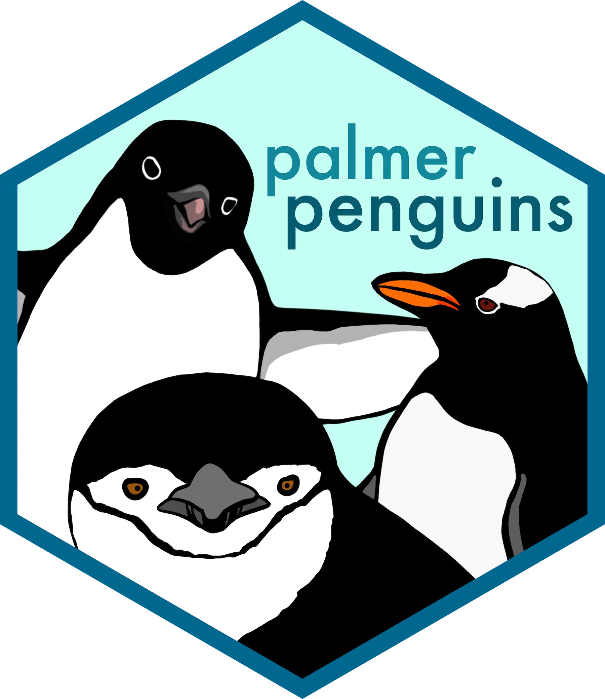
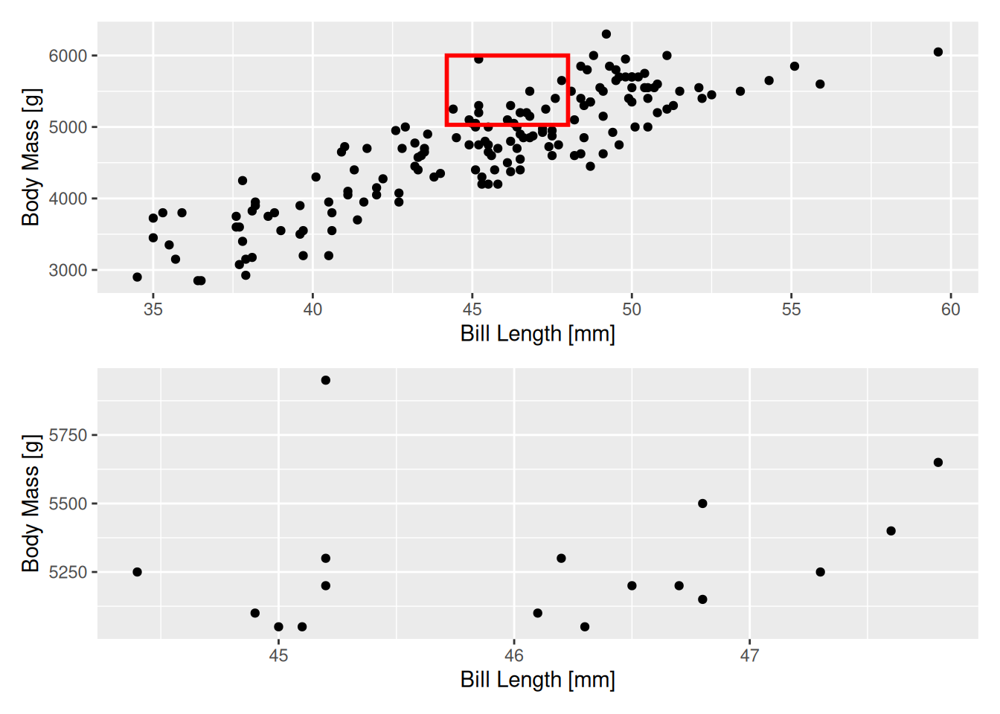
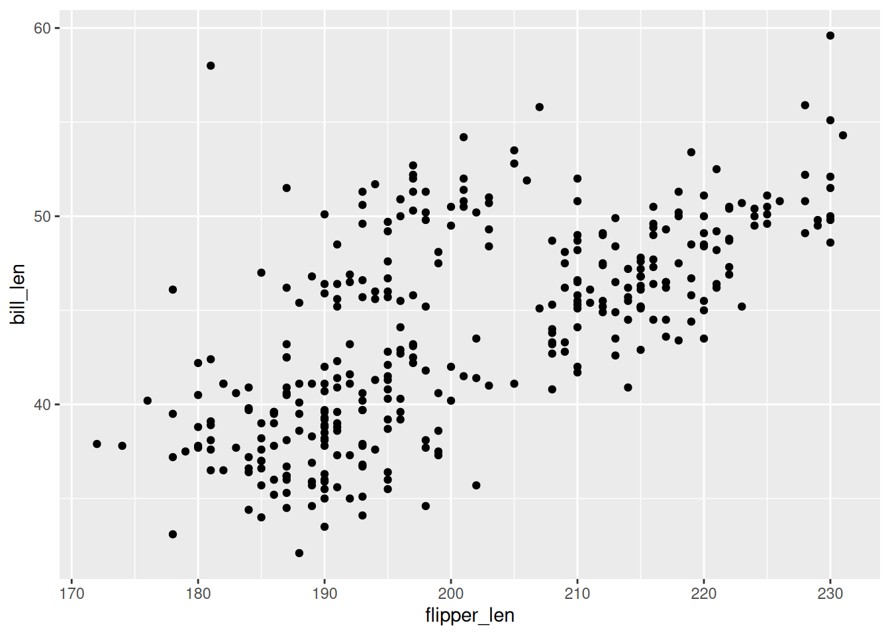
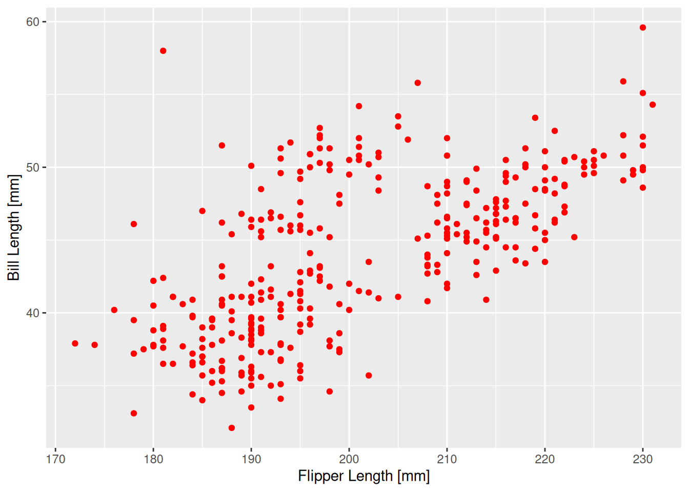
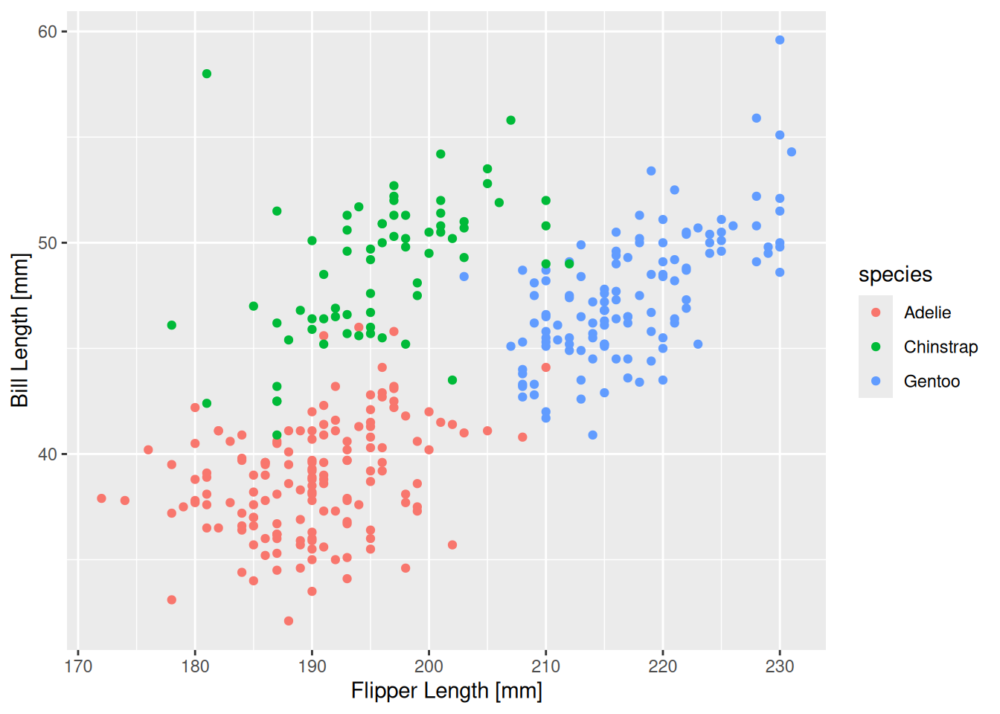
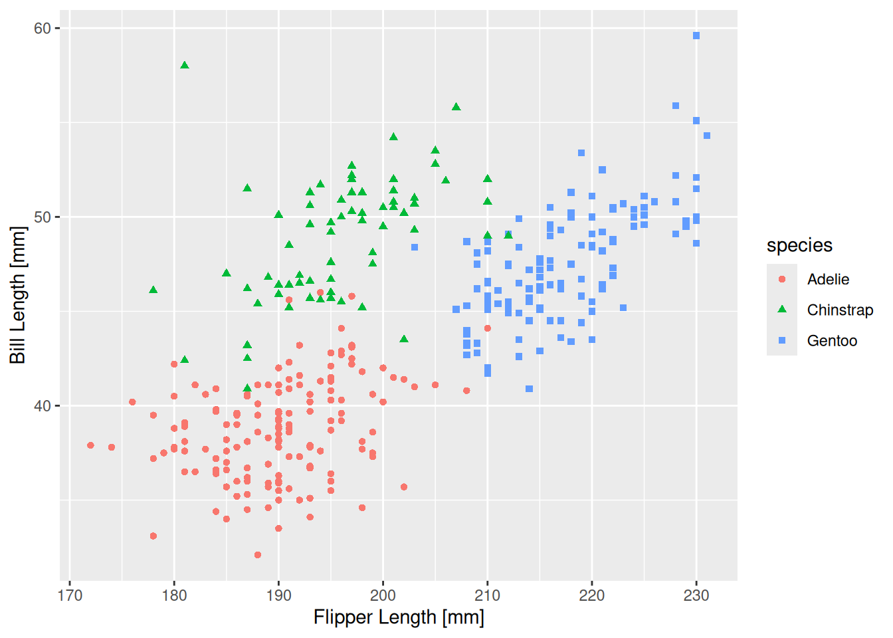
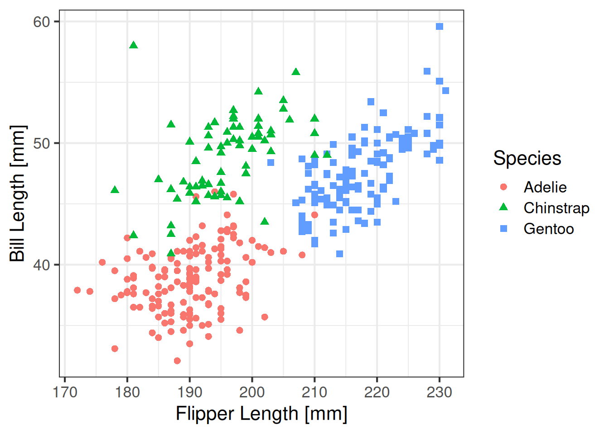
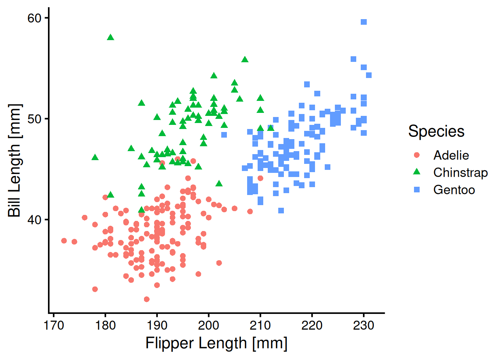
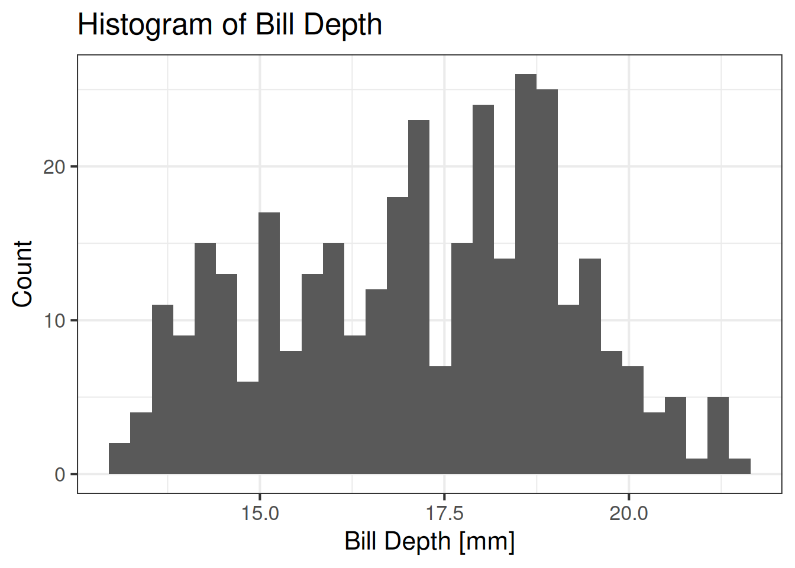

# Eger henuz kurmadiysanız, asagidaki kodu yorumdan cikartip calistirabilirsiniz
# install.packages("dplyr")
# install.packages("ggplot2")PENGUINS VERİSİ İLE DPLYR’YE GİRİŞ
R
dplyr
tidyverse
palmerpenguins
dplyr ile Veri Cambazlığı

Merhabalar, blogun yeni yazısına hoş geldiniz. Takıldığınız ve anlamadığınız yerler olursa lütfen yorum yapmaya çekinmeyiniz. Ayrıca katkılarınızı ve eleştirilerinizi de bekliyorum. Keyifli okumalar.
Bir önceki yazıda penguins verisi ile base R’a bir giriş yapmış, birçok temel veri işini base R ile yapmayı anlatmıştım. Bu yazıda ise aynı işlemleri {tidyverse}’nin meşhur paketi {dplyr}’yi kullanarak yapacağız. Veri görselleştirme için ise ggplot2 paketini kullanacağız. Bu sefer yazı daha kısa olacak. R kullanmaya yeni başlayanların, tidyverse öğrenmeden önce dilin temel kavramlarını öğrenmelerinin önemli olduğunu düşünüyorum. Bu sebeple öncelikle bir önceki yazıya ve o yazıda önerdiğim linklere bakmanızı öneririm.
Daha önce de çok kez tekrar ettiğim gibi, tidyverse, veri bilimi için geliştirilmiş çok sayıda işlevsel paket barındıran bir paket koleksiyonu. dplyr ve daha genel olarak tidyverse, R dünyasının en çok kullandığı ve aynı zamanda üzerine en çok tartıştığı paketlerden. Bu konudaki görüşlerimi R İLE TOPOGRAFIK VERİ İNDİRME - DEM VERİSİ İNDİRME VE GÖRSELLEŞTİRME yazısında belirtmiştim. Son dönemde base R ağırlıklı bir R kullanımını tercih etsem de, gerektiğinde data.table ve tidyverse de kullanıyorum. “Kadim” base R vs. tidyverse ya da tidyverse vs. data.table savaşını alevlendirmeye de niyetim yok. :) Parsimoni ilkesi gereği basiti ve minimali seçmeyi, yaptığım analizlerin, yazdığım programların arkasında neler döndüğünü bilmeyi tercih ediyorum ancak bu, tidyverse ya da data.table’yi değersiz kılmıyor. İlginizi çekebileceğini düşündüğüm şu iki linki bırakıyor ve ardından yazıya başlıyorum; Less Is More, tinyverse.

1. GİRİŞ
Adettendir, önce paketleri R’a yükleyelim ve ardından veri setine bakarak başlayalım.
library(dplyr)
library(ggplot2)library(tidyverse) ile tüm tidyverse paketlerini yükleyebilirdik fakat ayrı ayrı paketleri yüklemek hem daha minimal hem de gerçekte hangi paketi kullandığımızı daha iyi anlayabiliyoruz. Örneğin yıllarca tidyverse kullanmama rağmen drop_na() gibi bazı tidyr fonksiyonlarının dplyr ile geldiğini sanıyormuşum. Bu gibi karışıklıklardan korunmak için paketleri ihtiyaç duydukça tek tek yüklemek daha iyi bir pratik.
penguins species island bill_len bill_dep flipper_len body_mass sex year
1 Adelie Torgersen 39.1 18.7 181 3750 male 2007
2 Adelie Torgersen 39.5 17.4 186 3800 female 2007
3 Adelie Torgersen 40.3 18.0 195 3250 female 2007
4 Adelie Torgersen NA NA NA NA <NA> 2007
5 Adelie Torgersen 36.7 19.3 193 3450 female 2007
6 Adelie Torgersen 39.3 20.6 190 3650 male 2007
7 Adelie Torgersen 38.9 17.8 181 3625 female 2007
8 Adelie Torgersen 39.2 19.6 195 4675 male 2007
9 Adelie Torgersen 34.1 18.1 193 3475 <NA> 2007
10 Adelie Torgersen 42.0 20.2 190 4250 <NA> 2007
11 Adelie Torgersen 37.8 17.1 186 3300 <NA> 2007
12 Adelie Torgersen 37.8 17.3 180 3700 <NA> 2007
13 Adelie Torgersen 41.1 17.6 182 3200 female 2007
14 Adelie Torgersen 38.6 21.2 191 3800 male 2007
15 Adelie Torgersen 34.6 21.1 198 4400 male 2007
16 Adelie Torgersen 36.6 17.8 185 3700 female 2007
17 Adelie Torgersen 38.7 19.0 195 3450 female 2007
18 Adelie Torgersen 42.5 20.7 197 4500 male 2007
19 Adelie Torgersen 34.4 18.4 184 3325 female 2007
20 Adelie Torgersen 46.0 21.5 194 4200 male 2007
21 Adelie Biscoe 37.8 18.3 174 3400 female 2007
22 Adelie Biscoe 37.7 18.7 180 3600 male 2007
23 Adelie Biscoe 35.9 19.2 189 3800 female 2007
24 Adelie Biscoe 38.2 18.1 185 3950 male 2007
25 Adelie Biscoe 38.8 17.2 180 3800 male 2007
[ reached 'max' / getOption("max.print") -- omitted 319 rows ]Gördüğünüz gibi birçok satır ve sütundan oluşan bir veri tablosu. Öncesinde R konsolunun kaç tane değer yazdıracağını ayarlamadıysanız veriyi bu şekilde çağırmak, tüm veri tablosunu konsola yazdıracaktır. Bu durum, büyük veri tablolarında istenmeyen bir durum. Bundan kaçınmak için önceki yazıda bahsettiğim gibi head() ve tail() fonksiyonlarını kullanabilirsiniz ancak ben bu sefer veriyi, bir tür data.frame yapısı olan tibble’ye dönüştüreceğim. tidyverse ile çalışırken tibble kullanmak daha rahat hissettiriyor.
peng <- as_tibble(penguins)
peng# A tibble: 344 × 8
species island bill_len bill_dep flipper_len body_mass sex year
<fct> <fct> <dbl> <dbl> <int> <int> <fct> <int>
1 Adelie Torgersen 39.1 18.7 181 3750 male 2007
2 Adelie Torgersen 39.5 17.4 186 3800 female 2007
3 Adelie Torgersen 40.3 18 195 3250 female 2007
4 Adelie Torgersen NA NA NA NA <NA> 2007
5 Adelie Torgersen 36.7 19.3 193 3450 female 2007
6 Adelie Torgersen 39.3 20.6 190 3650 male 2007
7 Adelie Torgersen 38.9 17.8 181 3625 female 2007
8 Adelie Torgersen 39.2 19.6 195 4675 male 2007
9 Adelie Torgersen 34.1 18.1 193 3475 <NA> 2007
10 Adelie Torgersen 42 20.2 190 4250 <NA> 2007
# ℹ 334 more rowsGördüğünüz gibi data.frame’nin kaç değişken ve gözlemden oluştuğundan, sütunlardaki veri tiplerine kadar birçok bilgi ekrana basılıyor ve veri, daha kompakt bir hâlde görüntülenebiliyor. Ancak bir konuda da uyarmam gerekiyor. tibble veri yapısı, klasik data.frame’den farklı davranışlara sahip. Bu sebeple tidyverse fonksiyonları dışında tibble kullanırken dikkatli olmanızı, mümkünse data.frame kullanmanızı tavsiye ediyorum.
Şimdi verinin yapısına daha ayrıntılı bakmak için glimpse() fonksiyonunu kullanalım. Bu fonksiyon, base R’daki str() ile aynı işleve sahip.
glimpse(peng)Rows: 344
Columns: 8
$ species <fct> Adelie, Adelie, Adelie, Adelie, Adelie, Adelie, Adelie, Ad…
$ island <fct> Torgersen, Torgersen, Torgersen, Torgersen, Torgersen, Tor…
$ bill_len <dbl> 39.1, 39.5, 40.3, NA, 36.7, 39.3, 38.9, 39.2, 34.1, 42.0, …
$ bill_dep <dbl> 18.7, 17.4, 18.0, NA, 19.3, 20.6, 17.8, 19.6, 18.1, 20.2, …
$ flipper_len <int> 181, 186, 195, NA, 193, 190, 181, 195, 193, 190, 186, 180,…
$ body_mass <int> 3750, 3800, 3250, NA, 3450, 3650, 3625, 4675, 3475, 4250, …
$ sex <fct> male, female, female, NA, female, male, female, male, NA, …
$ year <int> 2007, 2007, 2007, 2007, 2007, 2007, 2007, 2007, 2007, 2007…Gördüğünüz gibi 344 gözlem ve 8 değişkenden oluşan bir veri tablosu.
Şimdi basit olarak nasıl satır ve sütun seçeceğimize bakalım. Sütun seçmek için select() fonksiyonunu, indeksine göre satır seçmek için ise slice() fonksiyonunu kullacağız.
İlk 6 satırı seçelim.
slice(peng, 1:6)# A tibble: 6 × 8
species island bill_len bill_dep flipper_len body_mass sex year
<fct> <fct> <dbl> <dbl> <int> <int> <fct> <int>
1 Adelie Torgersen 39.1 18.7 181 3750 male 2007
2 Adelie Torgersen 39.5 17.4 186 3800 female 2007
3 Adelie Torgersen 40.3 18 195 3250 female 2007
4 Adelie Torgersen NA NA NA NA <NA> 2007
5 Adelie Torgersen 36.7 19.3 193 3450 female 2007
6 Adelie Torgersen 39.3 20.6 190 3650 male 2007Şimdi de ilk iki sütunu ve ilk 10 satırı seçelim.
select(slice(peng, 1:10), 1:2)# A tibble: 10 × 2
species island
<fct> <fct>
1 Adelie Torgersen
2 Adelie Torgersen
3 Adelie Torgersen
4 Adelie Torgersen
5 Adelie Torgersen
6 Adelie Torgersen
7 Adelie Torgersen
8 Adelie Torgersen
9 Adelie Torgersen
10 Adelie Torgersen[] kullanımından daha karmaşık görünüyor. Özellikle de iç içe fonksiyonla yazıldığı zaman. Ancak bir yol daha var. tidyverse’nin fiillere dayanan felsefesini pipe operatörüyle birleştirinca asıl gücü ortaya çıkıyor. İlk olarak tidyverse ile gelen ve ardından base R’a eklenen pipe - |> operatörü ile veri işleme fonksiyonlarını birbirine bağlayabiliriz. Bu, en fazla birkaç satırdan oluşan pipeline’ler kurulduğu sürece daha okunaklı. Debugging’i zorlaştırsa da kısa ve iyi yazılmış pipeline’ler ile veri analizi daha kolay hâle geliyor.
peng |>
slice(1:10) |>
select(1:2)# A tibble: 10 × 2
species island
<fct> <fct>
1 Adelie Torgersen
2 Adelie Torgersen
3 Adelie Torgersen
4 Adelie Torgersen
5 Adelie Torgersen
6 Adelie Torgersen
7 Adelie Torgersen
8 Adelie Torgersen
9 Adelie Torgersen
10 Adelie TorgersenÇok uzun olmayan pipe’leri tek satır hâlinde de yazabiliriz. Tek satırda 80 karakteri geçmemeyi kural hâline getirirseniz kodlarınız da daha okunaklı olacaktır.
peng |> slice(1:10) |> select(species, island)# A tibble: 10 × 2
species island
<fct> <fct>
1 Adelie Torgersen
2 Adelie Torgersen
3 Adelie Torgersen
4 Adelie Torgersen
5 Adelie Torgersen
6 Adelie Torgersen
7 Adelie Torgersen
8 Adelie Torgersen
9 Adelie Torgersen
10 Adelie TorgersenGördüğünüz gibi sütun isimlerini kullanırken ne tırnak içerisinde yazdık, ne de c() ile bir vektör oluşturduk. İşte dplyr burada bir sihir yapıyor. Bir tür metaprogramming hilesi. Buna Non-Standard Evaluation (NSE) deniliyor. Ya da tidyverse’nin geliştirdiği versiyonuyla tidy evaluation. Veri analizi yaparken işleri oldukça kolaylaştıran bu sihir, programlama yaparken dikkatli olmayı gerektiriyor.
Şimdi de species değişkeni için kaç adet eşsiz (unique) değer olduğuna bakalım. Diğer kategorik değişkenler için de aynı yöntemi kullanabilirsiniz.
peng |> distinct(species)# A tibble: 3 × 1
species
<fct>
1 Adelie
2 Gentoo
3 Chinstrapbase R’daki unique() fonksiyonuyla benzer işleve sahip distinct() fonksiyonunu kullandık. Bu fonksiyon, eşsiz değerleri bir tibble olarak döndürdü.
Şimdi de bu eşsiz değerlerin sıklık tablosuna bakalım.
peng |> count(species)# A tibble: 3 × 2
species n
<fct> <int>
1 Adelie 152
2 Chinstrap 68
3 Gentoo 124peng |> count(island)# A tibble: 3 × 2
island n
<fct> <int>
1 Biscoe 168
2 Dream 124
3 Torgersen 52Tek tek faktör değişkenlerimizin sıklık tablosuna baktığımıza göre şimdi de, iki farklı değişken kullanarak bakabiliriz.
Hangi adada hangi türden kaç tane penguen mevcut?
peng |> count(species, island)# A tibble: 5 × 3
species island n
<fct> <fct> <int>
1 Adelie Biscoe 44
2 Adelie Dream 56
3 Adelie Torgersen 52
4 Chinstrap Dream 68
5 Gentoo Biscoe 124Gördüğünüz gibi iki değişkeni de kullanarak bunu öğrenebiliyoruz.
2. VERİ CAMBAZLIĞI
Şu ana kadar bir önceki yazının işleyişini takip ederek, temel kavramlara değindik.
Şimdi bir veri analizi - veri bilimi iş akışının en mühim kısımlarından olan veri cambazlığını nasıl yapabileceğimize bakacağız. Bunun için Hadley Wickham’ın R for Data Science - ilk baskının TR çevirisi kitabında anlattığı şekliyle sütun, satır ve grup işlemlerini yapacağız. Gerçek dünya verileriyle uğraştığımızda bu kısım, bir veri bilimi iş akışının genellikle büyük çoğunluğunu oluşturuyor.
R4DS, {tidyverse} temelleri için oldukça sağlam bir kitap! Ayrıca Grant R. McDermott’un Data science for economists dersinin notlarını da öneririm. Bu ders notları sayesinde çok şey öğrendim.
Bu bölümde yine palmerpenguins datasını kullanacağız ama bu sefer ham olan versiyonunu. Verinin ham hâlini kullanarak penguins’teki son hâline ulaşmaya çalışacağız. Bu veriye erişmek için penguins_raw yazabilirsiniz.
penguins_raw studyName Sample Number Species Region Island
1 PAL0708 1 Adelie Penguin (Pygoscelis adeliae) Anvers Torgersen
2 PAL0708 2 Adelie Penguin (Pygoscelis adeliae) Anvers Torgersen
3 PAL0708 3 Adelie Penguin (Pygoscelis adeliae) Anvers Torgersen
4 PAL0708 4 Adelie Penguin (Pygoscelis adeliae) Anvers Torgersen
5 PAL0708 5 Adelie Penguin (Pygoscelis adeliae) Anvers Torgersen
6 PAL0708 6 Adelie Penguin (Pygoscelis adeliae) Anvers Torgersen
7 PAL0708 7 Adelie Penguin (Pygoscelis adeliae) Anvers Torgersen
8 PAL0708 8 Adelie Penguin (Pygoscelis adeliae) Anvers Torgersen
9 PAL0708 9 Adelie Penguin (Pygoscelis adeliae) Anvers Torgersen
10 PAL0708 10 Adelie Penguin (Pygoscelis adeliae) Anvers Torgersen
11 PAL0708 11 Adelie Penguin (Pygoscelis adeliae) Anvers Torgersen
Stage Individual ID Clutch Completion Date Egg
1 Adult, 1 Egg Stage N1A1 Yes 2007-11-11
2 Adult, 1 Egg Stage N1A2 Yes 2007-11-11
3 Adult, 1 Egg Stage N2A1 Yes 2007-11-16
4 Adult, 1 Egg Stage N2A2 Yes 2007-11-16
5 Adult, 1 Egg Stage N3A1 Yes 2007-11-16
6 Adult, 1 Egg Stage N3A2 Yes 2007-11-16
7 Adult, 1 Egg Stage N4A1 No 2007-11-15
8 Adult, 1 Egg Stage N4A2 No 2007-11-15
9 Adult, 1 Egg Stage N5A1 Yes 2007-11-09
10 Adult, 1 Egg Stage N5A2 Yes 2007-11-09
11 Adult, 1 Egg Stage N6A1 Yes 2007-11-09
Culmen Length (mm) Culmen Depth (mm) Flipper Length (mm) Body Mass (g)
1 39.1 18.7 181 3750
2 39.5 17.4 186 3800
3 40.3 18.0 195 3250
4 NA NA NA NA
5 36.7 19.3 193 3450
6 39.3 20.6 190 3650
7 38.9 17.8 181 3625
8 39.2 19.6 195 4675
9 34.1 18.1 193 3475
10 42.0 20.2 190 4250
11 37.8 17.1 186 3300
Sex Delta 15 N (o/oo) Delta 13 C (o/oo)
1 MALE NA NA
2 FEMALE 8.94956 -24.69454
3 FEMALE 8.36821 -25.33302
4 <NA> NA NA
5 FEMALE 8.76651 -25.32426
6 MALE 8.66496 -25.29805
7 FEMALE 9.18718 -25.21799
8 MALE 9.46060 -24.89958
9 <NA> NA NA
10 <NA> 9.13362 -25.09368
11 <NA> 8.63243 -25.21315
Comments
1 Not enough blood for isotopes.
2 <NA>
3 <NA>
4 Adult not sampled.
5 <NA>
6 <NA>
7 Nest never observed with full clutch.
8 Nest never observed with full clutch.
9 No blood sample obtained.
10 No blood sample obtained for sexing.
11 No blood sample obtained for sexing.
[ reached 'max' / getOption("max.print") -- omitted 333 rows ]Öncelikle tibble’ye çevirelim.
raw <- as_tibble(penguins_raw)
raw# A tibble: 344 × 17
studyName `Sample Number` Species Region Island Stage `Individual ID`
<chr> <dbl> <chr> <chr> <chr> <chr> <chr>
1 PAL0708 1 Adelie Penguin… Anvers Torge… Adul… N1A1
2 PAL0708 2 Adelie Penguin… Anvers Torge… Adul… N1A2
3 PAL0708 3 Adelie Penguin… Anvers Torge… Adul… N2A1
4 PAL0708 4 Adelie Penguin… Anvers Torge… Adul… N2A2
5 PAL0708 5 Adelie Penguin… Anvers Torge… Adul… N3A1
6 PAL0708 6 Adelie Penguin… Anvers Torge… Adul… N3A2
7 PAL0708 7 Adelie Penguin… Anvers Torge… Adul… N4A1
8 PAL0708 8 Adelie Penguin… Anvers Torge… Adul… N4A2
9 PAL0708 9 Adelie Penguin… Anvers Torge… Adul… N5A1
10 PAL0708 10 Adelie Penguin… Anvers Torge… Adul… N5A2
# ℹ 334 more rows
# ℹ 10 more variables: `Clutch Completion` <chr>, `Date Egg` <date>,
# `Culmen Length (mm)` <dbl>, `Culmen Depth (mm)` <dbl>,
# `Flipper Length (mm)` <dbl>, `Body Mass (g)` <dbl>, Sex <chr>,
# `Delta 15 N (o/oo)` <dbl>, `Delta 13 C (o/oo)` <dbl>, Comments <chr>Şimdi veriye hızlıca göz atalım.
glimpse(raw)Rows: 344
Columns: 17
$ studyName <chr> "PAL0708", "PAL0708", "PAL0708", "PAL0708", "PAL…
$ `Sample Number` <dbl> 1, 2, 3, 4, 5, 6, 7, 8, 9, 10, 11, 12, 13, 14, 1…
$ Species <chr> "Adelie Penguin (Pygoscelis adeliae)", "Adelie P…
$ Region <chr> "Anvers", "Anvers", "Anvers", "Anvers", "Anvers"…
$ Island <chr> "Torgersen", "Torgersen", "Torgersen", "Torgerse…
$ Stage <chr> "Adult, 1 Egg Stage", "Adult, 1 Egg Stage", "Adu…
$ `Individual ID` <chr> "N1A1", "N1A2", "N2A1", "N2A2", "N3A1", "N3A2", …
$ `Clutch Completion` <chr> "Yes", "Yes", "Yes", "Yes", "Yes", "Yes", "No", …
$ `Date Egg` <date> 2007-11-11, 2007-11-11, 2007-11-16, 2007-11-16,…
$ `Culmen Length (mm)` <dbl> 39.1, 39.5, 40.3, NA, 36.7, 39.3, 38.9, 39.2, 34…
$ `Culmen Depth (mm)` <dbl> 18.7, 17.4, 18.0, NA, 19.3, 20.6, 17.8, 19.6, 18…
$ `Flipper Length (mm)` <dbl> 181, 186, 195, NA, 193, 190, 181, 195, 193, 190,…
$ `Body Mass (g)` <dbl> 3750, 3800, 3250, NA, 3450, 3650, 3625, 4675, 34…
$ Sex <chr> "MALE", "FEMALE", "FEMALE", NA, "FEMALE", "MALE"…
$ `Delta 15 N (o/oo)` <dbl> NA, 8.94956, 8.36821, NA, 8.76651, 8.66496, 9.18…
$ `Delta 13 C (o/oo)` <dbl> NA, -24.69454, -25.33302, NA, -25.32426, -25.298…
$ Comments <chr> "Not enough blood for isotopes.", NA, NA, "Adult…summary(raw) studyName Sample Number Species Region
Length:344 Min. : 1.00 Length:344 Length:344
Class :character 1st Qu.: 29.00 Class :character Class :character
Mode :character Median : 58.00 Mode :character Mode :character
Mean : 63.15
3rd Qu.: 95.25
Max. :152.00
Island Stage Individual ID Clutch Completion
Length:344 Length:344 Length:344 Length:344
Class :character Class :character Class :character Class :character
Mode :character Mode :character Mode :character Mode :character
Date Egg Culmen Length (mm) Culmen Depth (mm) Flipper Length (mm)
Min. :2007-11-09 Min. :32.10 Min. :13.10 Min. :172.0
1st Qu.:2007-11-28 1st Qu.:39.23 1st Qu.:15.60 1st Qu.:190.0
Median :2008-11-09 Median :44.45 Median :17.30 Median :197.0
Mean :2008-11-27 Mean :43.92 Mean :17.15 Mean :200.9
3rd Qu.:2009-11-16 3rd Qu.:48.50 3rd Qu.:18.70 3rd Qu.:213.0
Max. :2009-12-01 Max. :59.60 Max. :21.50 Max. :231.0
NA's :2 NA's :2 NA's :2
Body Mass (g) Sex Delta 15 N (o/oo) Delta 13 C (o/oo)
Min. :2700 Length:344 Min. : 7.632 Min. :-27.02
1st Qu.:3550 Class :character 1st Qu.: 8.300 1st Qu.:-26.32
Median :4050 Mode :character Median : 8.652 Median :-25.83
Mean :4202 Mean : 8.733 Mean :-25.69
3rd Qu.:4750 3rd Qu.: 9.172 3rd Qu.:-25.06
Max. :6300 Max. :10.025 Max. :-23.79
NA's :2 NA's :14 NA's :13
Comments
Length:344
Class :character
Mode :character

SÜTUN İŞLEMLERİ
Bu kısımda temel olarak select(), mutate(), rename() ve relocate() fonksiyonunu kullanacağız.
penguins verisi 8 değişkenden oluşuyordu ancak penguins_raw verisi 17 değişkenden oluşuyor.
Öncelikle penguins’te olan değişkenlerin bizim için önemli olduğunu varsayalım ve onları seçelim.
dat <- raw |>
select(c("Species", "Island", "Date Egg", "Culmen Length (mm)",
"Culmen Depth (mm)", "Flipper Length (mm)",
"Body Mass (g)", "Sex"))
dat# A tibble: 344 × 8
Species Island `Date Egg` `Culmen Length (mm)` `Culmen Depth (mm)`
<chr> <chr> <date> <dbl> <dbl>
1 Adelie Penguin (P… Torge… 2007-11-11 39.1 18.7
2 Adelie Penguin (P… Torge… 2007-11-11 39.5 17.4
3 Adelie Penguin (P… Torge… 2007-11-16 40.3 18
4 Adelie Penguin (P… Torge… 2007-11-16 NA NA
5 Adelie Penguin (P… Torge… 2007-11-16 36.7 19.3
6 Adelie Penguin (P… Torge… 2007-11-16 39.3 20.6
7 Adelie Penguin (P… Torge… 2007-11-15 38.9 17.8
8 Adelie Penguin (P… Torge… 2007-11-15 39.2 19.6
9 Adelie Penguin (P… Torge… 2007-11-09 34.1 18.1
10 Adelie Penguin (P… Torge… 2007-11-09 42 20.2
# ℹ 334 more rows
# ℹ 3 more variables: `Flipper Length (mm)` <dbl>, `Body Mass (g)` <dbl>,
# Sex <chr>Gördüğünüz gibi seçeceğimiz sütunun isimlerini tırnak içerisinde, bir vektör olarak da verebiliriz. Hatta Culmen Length (mm) gibi boşluk, parantez gibi karakterler içeren isimleri bu şekilde vermek daha sağlıklı.
glimpse(dat)Rows: 344
Columns: 8
$ Species <chr> "Adelie Penguin (Pygoscelis adeliae)", "Adelie P…
$ Island <chr> "Torgersen", "Torgersen", "Torgersen", "Torgerse…
$ `Date Egg` <date> 2007-11-11, 2007-11-11, 2007-11-16, 2007-11-16,…
$ `Culmen Length (mm)` <dbl> 39.1, 39.5, 40.3, NA, 36.7, 39.3, 38.9, 39.2, 34…
$ `Culmen Depth (mm)` <dbl> 18.7, 17.4, 18.0, NA, 19.3, 20.6, 17.8, 19.6, 18…
$ `Flipper Length (mm)` <dbl> 181, 186, 195, NA, 193, 190, 181, 195, 193, 190,…
$ `Body Mass (g)` <dbl> 3750, 3800, 3250, NA, 3450, 3650, 3625, 4675, 34…
$ Sex <chr> "MALE", "FEMALE", "FEMALE", NA, "FEMALE", "MALE"…Şimdi de sütun isimlerini değiştirelim.
camelCase kullanılan isimler, büyük harfle başlayan isimler, birimler, boşluklar derken standart olmayan birçok şey var. Buradaki isimleri, orijinal veriye sadık kalarak değiştireceğiz.
Biraz adlandırma stillerinden bahsetmek gerekirse; ben, zaman zaman tidy style guide’da belirtildiği gibi snake_case kullanmayı tercih ediyorum. Zaman zamansa camelCase. Bunun tek bir doğrusu yok, önemli olan okunaklı, tutarlı ve kolay hata ayıklanabilen kodlar yazmak. R için çok sayıda style guide mevcut. Şuradaki linkleri incelemenizi öneririm; Google, tidy, bioconductor, Norm Matloff.
dat |>
setNames(c("species", "island", "year", "bill_len", "bill_dep",
"flipper_len", "body_mass", "sex"))# A tibble: 344 × 8
species island year bill_len bill_dep flipper_len body_mass sex
<chr> <chr> <date> <dbl> <dbl> <dbl> <dbl> <chr>
1 Adelie Pengu… Torge… 2007-11-11 39.1 18.7 181 3750 MALE
2 Adelie Pengu… Torge… 2007-11-11 39.5 17.4 186 3800 FEMA…
3 Adelie Pengu… Torge… 2007-11-16 40.3 18 195 3250 FEMA…
4 Adelie Pengu… Torge… 2007-11-16 NA NA NA NA <NA>
5 Adelie Pengu… Torge… 2007-11-16 36.7 19.3 193 3450 FEMA…
6 Adelie Pengu… Torge… 2007-11-16 39.3 20.6 190 3650 MALE
7 Adelie Pengu… Torge… 2007-11-15 38.9 17.8 181 3625 FEMA…
8 Adelie Pengu… Torge… 2007-11-15 39.2 19.6 195 4675 MALE
9 Adelie Pengu… Torge… 2007-11-09 34.1 18.1 193 3475 <NA>
10 Adelie Pengu… Torge… 2007-11-09 42 20.2 190 4250 <NA>
# ℹ 334 more rowsSütun isimlerini, base R’dan gelen setNames() fonksiyonuyla değiştirebileceğimiz gibi, rename() fonksiyonunu kullanarak da değiştirebiliriz. Ardından pipe ile bağlayarak sütunları penguins verisindeki sırayla sıralayalım.
dat <- dat |>
rename(species=Species,
island=Island,
year=`Date Egg`,
bill_len=`Culmen Length (mm)`,
bill_dep=`Culmen Depth (mm)`,
flipper_len=`Flipper Length (mm)`,
body_mass=`Body Mass (g)`,
sex=Sex) |>
relocate(year, .after=sex)
dat# A tibble: 344 × 8
species island bill_len bill_dep flipper_len body_mass sex year
<chr> <chr> <dbl> <dbl> <dbl> <dbl> <chr> <date>
1 Adelie Pengu… Torge… 39.1 18.7 181 3750 MALE 2007-11-11
2 Adelie Pengu… Torge… 39.5 17.4 186 3800 FEMA… 2007-11-11
3 Adelie Pengu… Torge… 40.3 18 195 3250 FEMA… 2007-11-16
4 Adelie Pengu… Torge… NA NA NA NA <NA> 2007-11-16
5 Adelie Pengu… Torge… 36.7 19.3 193 3450 FEMA… 2007-11-16
6 Adelie Pengu… Torge… 39.3 20.6 190 3650 MALE 2007-11-16
7 Adelie Pengu… Torge… 38.9 17.8 181 3625 FEMA… 2007-11-15
8 Adelie Pengu… Torge… 39.2 19.6 195 4675 MALE 2007-11-15
9 Adelie Pengu… Torge… 34.1 18.1 193 3475 <NA> 2007-11-09
10 Adelie Pengu… Torge… 42 20.2 190 4250 <NA> 2007-11-09
# ℹ 334 more rowsGördüğünüz gibi isimler ve sütunların sırası penguins verisiyle aynı hâle geldi.
Bu iş de tamamdır!
Şimdi de görevimizi biraz daha zorlaştıralım. Her sütunun içindeki değerleri düzenleyeceğiz. Dikkat ettiyseniz penguins verisinde çok daha düzenli bir hâldeydi.
İlk olarak yılla başlayalım. Tarihi yıla çevirmemiz lazım.
İlk olarak klasik $ operatörüyle erişelim.
dat$year [1] "2007-11-11" "2007-11-11" "2007-11-16" "2007-11-16" "2007-11-16"
[6] "2007-11-16" "2007-11-15" "2007-11-15" "2007-11-09" "2007-11-09"
[11] "2007-11-09" "2007-11-09" "2007-11-15" "2007-11-15" "2007-11-16"
[16] "2007-11-16" "2007-11-12" "2007-11-12" "2007-11-16" "2007-11-16"
[21] "2007-11-12" "2007-11-12" "2007-11-12" "2007-11-12" "2007-11-10"
[26] "2007-11-10" "2007-11-12" "2007-11-12" "2007-11-10" "2007-11-10"
[31] "2007-11-09" "2007-11-09" "2007-11-09" "2007-11-09" "2007-11-16"
[36] "2007-11-16" "2007-11-16" "2007-11-16" "2007-11-13" "2007-11-13"
[41] "2007-11-16" "2007-11-16" "2007-11-19" "2007-11-19" "2007-11-16"
[46] "2007-11-16" "2007-11-13" "2007-11-13" "2007-11-13" "2007-11-13"
[51] "2008-11-06" "2008-11-06" "2008-11-09" "2008-11-09" "2008-11-09"
[56] "2008-11-09" "2008-11-15" "2008-11-15" "2008-11-15" "2008-11-15"
[61] "2008-11-13" "2008-11-13" "2008-11-13" "2008-11-13" "2008-11-13"
[66] "2008-11-13" "2008-11-06" "2008-11-06" "2008-11-11" "2008-11-11"
[71] "2008-11-14" "2008-11-14" "2008-11-11" "2008-11-11" "2008-11-08"
[76] "2008-11-08" "2008-11-06" "2008-11-06" "2008-11-09" "2008-11-09"
[81] "2008-11-02" "2008-11-02" "2008-11-07" "2008-11-07" "2008-11-17"
[86] "2008-11-17" "2008-11-08" "2008-11-08" "2008-11-08" "2008-11-08"
[91] "2008-11-14" "2008-11-14" "2008-11-05" "2008-11-05" "2008-11-17"
[96] "2008-11-17" "2008-11-08" "2008-11-08" "2008-11-10" "2008-11-10"
[101] "2009-11-09" "2009-11-09" "2009-11-15" "2009-11-15" "2009-11-15"
[106] "2009-11-15" "2009-11-15" "2009-11-15" "2009-11-20" "2009-11-20"
[111] "2009-11-12" "2009-11-12" "2009-11-15" "2009-11-15" "2009-11-17"
[116] "2009-11-17" "2009-11-18" "2009-11-18" "2009-11-22" "2009-11-22"
[121] "2009-11-17" "2009-11-17" "2009-11-16" "2009-11-16" "2009-11-18"
[126] "2009-11-18" "2009-11-21" "2009-11-21" "2009-11-18" "2009-11-18"
[131] "2009-11-23" "2009-11-23" "2009-11-10" "2009-11-10" "2009-11-13"
[136] "2009-11-13" "2009-11-16" "2009-11-16" "2009-11-16" "2009-11-16"
[141] "2009-11-14" "2009-11-14" "2009-11-16" "2009-11-16" "2009-11-16"
[146] "2009-11-16" "2009-11-13" "2009-11-13" "2009-11-17" "2009-11-17"
[151] "2009-11-17" "2009-11-17" "2007-11-27" "2007-11-27" "2007-11-27"
[156] "2007-11-27" "2007-11-18" "2007-11-18" "2007-11-27" "2007-11-27"
[161] "2007-11-27" "2007-11-27" "2007-11-27" "2007-11-27" "2007-11-29"
[166] "2007-11-29" "2007-12-03" "2007-12-03" "2007-11-27" "2007-11-27"
[171] "2007-11-27" "2007-11-27" "2007-11-27" "2007-11-27" "2007-11-27"
[176] "2007-11-27" "2007-11-29" "2007-11-29" "2007-11-29" "2007-11-29"
[181] "2007-11-29" "2007-11-29" "2007-11-29" "2007-11-29" "2007-12-03"
[186] "2007-12-03" "2008-11-13" "2008-11-13" "2008-11-02" "2008-11-02"
[191] "2008-11-09" "2008-11-09" "2008-11-04" "2008-11-04" "2008-11-04"
[196] "2008-11-04" "2008-11-03" "2008-11-03" "2008-11-09" "2008-11-09"
[ reached 'max' / getOption("max.print") -- omitted 144 entries ]Gördüğünüz yıl vektöründen ay ve günü silmemiz gerekiyor. Bunu tarihle oynayarak da yapabiliriz, karakter vektörüne çevirip, yıldan sonrasını silerek de. Normal şartlarda ikincisi daha kolay olabilir ama şu an hâlihazırda verimiz Date tipinde olduğu için direkt yılı seçebiliriz. Tarihlerle uğraşmak ilk başlayanlar için biraz zor olabilir. format() fonksiyonunu kullanacağız, "%Y" ile yılı seçeceğiz. Onu da değiştirdiğimiz sütuna tekrardan atayacağız.
Bunun için mutate() fonksiyonunu kullanacağız.
dat |> mutate(year=format(year, "%Y"))# A tibble: 344 × 8
species island bill_len bill_dep flipper_len body_mass sex year
<chr> <chr> <dbl> <dbl> <dbl> <dbl> <chr> <chr>
1 Adelie Penguin (P… Torge… 39.1 18.7 181 3750 MALE 2007
2 Adelie Penguin (P… Torge… 39.5 17.4 186 3800 FEMA… 2007
3 Adelie Penguin (P… Torge… 40.3 18 195 3250 FEMA… 2007
4 Adelie Penguin (P… Torge… NA NA NA NA <NA> 2007
5 Adelie Penguin (P… Torge… 36.7 19.3 193 3450 FEMA… 2007
6 Adelie Penguin (P… Torge… 39.3 20.6 190 3650 MALE 2007
7 Adelie Penguin (P… Torge… 38.9 17.8 181 3625 FEMA… 2007
8 Adelie Penguin (P… Torge… 39.2 19.6 195 4675 MALE 2007
9 Adelie Penguin (P… Torge… 34.1 18.1 193 3475 <NA> 2007
10 Adelie Penguin (P… Torge… 42 20.2 190 4250 <NA> 2007
# ℹ 334 more rowsGördüğünüz gibi yıllar tamam! Sırada diğer değişkenler var.
İlk olarak tür isimlerini kısaltmamız lazım. En zor işlerden birisi bu! Özellikle de ilk başlayanlar için. sub() ve gsub() fonksiyonu, karakter vektöründeki seçtiğimiz kısmı, istediğimiz karakterle değiştirir. sub() sadece ilk esleşmeyi değiştirdiği için onu kullanacağız. " .*" ile boşluk sonrasındaki tüm karakterleri seçiyoruz ve "" ile replace ediyoruz. Yani siliyoruz. Çünkü "" içinde hiçbir şey yok. Bu da bize tür isimlerinin boşluktan önceki kısmını veriyor tıpkı penguins verisinde olduğu gibi.
Bir önceki kod bloğunda yıl değişkenini düzenlemiş ama herhangi bir nesneye atamamıştık. Şimdi tüm işlemleri bir arada yapalım.
dat <- dat |>
mutate(year=format(year, "%Y"),
species=sub(" .*", "", species),
sex=tolower(sex))
dat# A tibble: 344 × 8
species island bill_len bill_dep flipper_len body_mass sex year
<chr> <chr> <dbl> <dbl> <dbl> <dbl> <chr> <chr>
1 Adelie Torgersen 39.1 18.7 181 3750 male 2007
2 Adelie Torgersen 39.5 17.4 186 3800 female 2007
3 Adelie Torgersen 40.3 18 195 3250 female 2007
4 Adelie Torgersen NA NA NA NA <NA> 2007
5 Adelie Torgersen 36.7 19.3 193 3450 female 2007
6 Adelie Torgersen 39.3 20.6 190 3650 male 2007
7 Adelie Torgersen 38.9 17.8 181 3625 female 2007
8 Adelie Torgersen 39.2 19.6 195 4675 male 2007
9 Adelie Torgersen 34.1 18.1 193 3475 <NA> 2007
10 Adelie Torgersen 42 20.2 190 4250 <NA> 2007
# ℹ 334 more rowsBu işlemler için tidyverse içindeki lubridate ve stringr paketlerini de kullanabiliriz ama amacım temel veri manipülasyonu işlemlerini göstermek olduğundan bu yazıda dplyr dışında paket kullanmak istemiyorum.
Şu an penguins verisiyle aynı veriye sahibiz!
identical(penguins, as.data.frame(dat))[1] FALSEAaa! Değilmişiz! Fark ne acaba?
glimpse(penguins)Rows: 344
Columns: 8
$ species <fct> Adelie, Adelie, Adelie, Adelie, Adelie, Adelie, Adelie, Ad…
$ island <fct> Torgersen, Torgersen, Torgersen, Torgersen, Torgersen, Tor…
$ bill_len <dbl> 39.1, 39.5, 40.3, NA, 36.7, 39.3, 38.9, 39.2, 34.1, 42.0, …
$ bill_dep <dbl> 18.7, 17.4, 18.0, NA, 19.3, 20.6, 17.8, 19.6, 18.1, 20.2, …
$ flipper_len <int> 181, 186, 195, NA, 193, 190, 181, 195, 193, 190, 186, 180,…
$ body_mass <int> 3750, 3800, 3250, NA, 3450, 3650, 3625, 4675, 3475, 4250, …
$ sex <fct> male, female, female, NA, female, male, female, male, NA, …
$ year <int> 2007, 2007, 2007, 2007, 2007, 2007, 2007, 2007, 2007, 2007…glimpse(as.data.frame(dat))Rows: 344
Columns: 8
$ species <chr> "Adelie", "Adelie", "Adelie", "Adelie", "Adelie", "Adelie"…
$ island <chr> "Torgersen", "Torgersen", "Torgersen", "Torgersen", "Torge…
$ bill_len <dbl> 39.1, 39.5, 40.3, NA, 36.7, 39.3, 38.9, 39.2, 34.1, 42.0, …
$ bill_dep <dbl> 18.7, 17.4, 18.0, NA, 19.3, 20.6, 17.8, 19.6, 18.1, 20.2, …
$ flipper_len <dbl> 181, 186, 195, NA, 193, 190, 181, 195, 193, 190, 186, 180,…
$ body_mass <dbl> 3750, 3800, 3250, NA, 3450, 3650, 3625, 4675, 3475, 4250, …
$ sex <chr> "male", "female", "female", NA, "female", "male", "female"…
$ year <chr> "2007", "2007", "2007", "2007", "2007", "2007", "2007", "2…Gördüğünüz gibi sütun tipleri birbirinden farklı. Onları da değiştirelim.
dat <- dat |>
mutate(species=as.factor(species),
island=as.factor(island),
flipper_len=as.integer(flipper_len),
body_mass=as.integer(body_mass),
sex=as.factor(sex),
year=as.integer(year))
glimpse(dat)Rows: 344
Columns: 8
$ species <fct> Adelie, Adelie, Adelie, Adelie, Adelie, Adelie, Adelie, Ad…
$ island <fct> Torgersen, Torgersen, Torgersen, Torgersen, Torgersen, Tor…
$ bill_len <dbl> 39.1, 39.5, 40.3, NA, 36.7, 39.3, 38.9, 39.2, 34.1, 42.0, …
$ bill_dep <dbl> 18.7, 17.4, 18.0, NA, 19.3, 20.6, 17.8, 19.6, 18.1, 20.2, …
$ flipper_len <int> 181, 186, 195, NA, 193, 190, 181, 195, 193, 190, 186, 180,…
$ body_mass <int> 3750, 3800, 3250, NA, 3450, 3650, 3625, 4675, 3475, 4250, …
$ sex <fct> male, female, female, NA, female, male, female, male, NA, …
$ year <int> 2007, 2007, 2007, 2007, 2007, 2007, 2007, 2007, 2007, 2007…Değişmesi gereken tüm sütunları tek tek değiştirdik.
identical(penguins, as.data.frame(dat))[1] TRUEGördüğünüz gibi artık verilerimiz eş! Hedefimize ulaştık, dağınık bir veriyi düzenli bir hâle getirdik.
SATIR İŞLEMLERİ
Bu kısımda temel olarak filter(), arrange() ve distinct() fonksiyonunu kullanacağız.
penguins_raw verisini, penguins verisiyle eş bir hâle getirdiğimize göre hedefimize ulaştık ama bu yazının amacına ulaşması için satır ve grup işlemlerini de görmemiz gerekiyor. Sütunlarını düzenlediğimiz dat nesnesi üzerinde biraz oynayalım.
Şimdi yalnızca Biscoe adasındaki penguenleri incelediğimizi varsayalım. Verimizi Biscoe adasına göre filtreleyeceğiz.
pengBiscoe <- dat |> filter(island == "Biscoe")Gördüğünüz gibi Biscoe adasındaki penguenleri seçtik ve pengBiscoe isimli bir nesneye atadık.
summary(pengBiscoe) species island bill_len bill_dep
Adelie : 44 Biscoe :168 Min. :34.50 Min. :13.10
Chinstrap: 0 Dream : 0 1st Qu.:42.00 1st Qu.:14.50
Gentoo :124 Torgersen: 0 Median :45.80 Median :15.50
Mean :45.26 Mean :15.87
3rd Qu.:48.70 3rd Qu.:17.00
Max. :59.60 Max. :21.10
NA's :1 NA's :1
flipper_len body_mass sex year
Min. :172.0 Min. :2850 female:80 Min. :2007
1st Qu.:199.5 1st Qu.:4200 male :83 1st Qu.:2007
Median :214.0 Median :4775 NA's : 5 Median :2008
Mean :209.7 Mean :4716 Mean :2008
3rd Qu.:220.0 3rd Qu.:5325 3rd Qu.:2009
Max. :231.0 Max. :6300 Max. :2009
NA's :1 NA's :1 Verinin özet istatistiklerine göz attığımızda bazı NA (Not Available - eksik değer) değerlerin olduğunu görüyoruz. Bu değerleri istemediğimizi ve onlardan kurtulmak istediğimizi varsayalım. Bunun için yine filtreleme yapabiliriz. is.na() ile NA olanların TRUE dönmesini sağladık ve ardından filtreledik.
pengBiscoe |> filter(is.na(sex))# A tibble: 5 × 8
species island bill_len bill_dep flipper_len body_mass sex year
<fct> <fct> <dbl> <dbl> <int> <int> <fct> <int>
1 Gentoo Biscoe 44.5 14.3 216 4100 <NA> 2007
2 Gentoo Biscoe 46.2 14.4 214 4650 <NA> 2008
3 Gentoo Biscoe 47.3 13.8 216 4725 <NA> 2009
4 Gentoo Biscoe 44.5 15.7 217 4875 <NA> 2009
5 Gentoo Biscoe NA NA NA NA <NA> 2009NA değerleri seçmiş olduk ancak biz NA değerleri seçmek değil, silmek istiyorduk. Burada ! operatörünü kullanacağız. Bu operatörümüz, bize “o” olmayan sonucu döndürecek.
pengBiscoe <- pengBiscoe |> filter(!is.na(sex))
pengBiscoe# A tibble: 163 × 8
species island bill_len bill_dep flipper_len body_mass sex year
<fct> <fct> <dbl> <dbl> <int> <int> <fct> <int>
1 Adelie Biscoe 37.8 18.3 174 3400 female 2007
2 Adelie Biscoe 37.7 18.7 180 3600 male 2007
3 Adelie Biscoe 35.9 19.2 189 3800 female 2007
4 Adelie Biscoe 38.2 18.1 185 3950 male 2007
5 Adelie Biscoe 38.8 17.2 180 3800 male 2007
6 Adelie Biscoe 35.3 18.9 187 3800 female 2007
7 Adelie Biscoe 40.6 18.6 183 3550 male 2007
8 Adelie Biscoe 40.5 17.9 187 3200 female 2007
9 Adelie Biscoe 37.9 18.6 172 3150 female 2007
10 Adelie Biscoe 40.5 18.9 180 3950 male 2007
# ℹ 153 more rowsBu işlemi dplyr 1.2.0 versiyonu ile gelen filter_out() fonksiyonuyla da yapabiliriz.
pengBiscoe |> filter_out(is.na(sex))# A tibble: 163 × 8
species island bill_len bill_dep flipper_len body_mass sex year
<fct> <fct> <dbl> <dbl> <int> <int> <fct> <int>
1 Adelie Biscoe 37.8 18.3 174 3400 female 2007
2 Adelie Biscoe 37.7 18.7 180 3600 male 2007
3 Adelie Biscoe 35.9 19.2 189 3800 female 2007
4 Adelie Biscoe 38.2 18.1 185 3950 male 2007
5 Adelie Biscoe 38.8 17.2 180 3800 male 2007
6 Adelie Biscoe 35.3 18.9 187 3800 female 2007
7 Adelie Biscoe 40.6 18.6 183 3550 male 2007
8 Adelie Biscoe 40.5 17.9 187 3200 female 2007
9 Adelie Biscoe 37.9 18.6 172 3150 female 2007
10 Adelie Biscoe 40.5 18.9 180 3950 male 2007
# ℹ 153 more rowsEvet şu an NA değerlere sahip olmayan sex değişkenine göre bir filtreleme yaptık.
Veriye tekrardan göz atalım.
summary(pengBiscoe) species island bill_len bill_dep
Adelie : 44 Biscoe :163 Min. :34.50 Min. :13.10
Chinstrap: 0 Dream : 0 1st Qu.:41.85 1st Qu.:14.50
Gentoo :119 Torgersen: 0 Median :45.80 Median :15.60
Mean :45.25 Mean :15.91
3rd Qu.:48.75 3rd Qu.:17.00
Max. :59.60 Max. :21.10
flipper_len body_mass sex year
Min. :172.0 Min. :2850 female:80 Min. :2007
1st Qu.:198.5 1st Qu.:4200 male :83 1st Qu.:2007
Median :213.0 Median :4800 Median :2008
Mean :209.6 Mean :4719 Mean :2008
3rd Qu.:220.0 3rd Qu.:5350 3rd Qu.:2009
Max. :231.0 Max. :6300 Max. :2009 Tüm NA değerlerden kurtulmuşuz. Çünkü bill_len, bill_dep, flipper_len ve body_mass değişkenlerindeki tek NA değeri 272. satırdaydı ve bu satırdaki sex değeri de NA olduğu için o gidince hepsi gitmiş.
Şimdi 48 mm’den daha küçük bill_len ve 5000 g’den daha büyük body_mass değerlerine göre filtrelememiz gerektiğini düşünelim. Eğer birden fazla değişkene göre filtreleme yapmamız gerekiyorsa ve için & operatörünü, veya için ise | operatörünü kullanıyoruz. filter() fonksiyonunda ve için , de kullanabiliriz.
hs <- pengBiscoe |> # hs: heavy-short penguenler
filter(bill_len < 48 & body_mass > 5000)
hs# A tibble: 17 × 8
species island bill_len bill_dep flipper_len body_mass sex year
<fct> <fct> <dbl> <dbl> <int> <int> <fct> <int>
1 Gentoo Biscoe 47.6 14.5 215 5400 male 2007
2 Gentoo Biscoe 46.7 15.3 219 5200 male 2007
3 Gentoo Biscoe 46.8 15.4 215 5150 male 2007
4 Gentoo Biscoe 46.3 15.8 215 5050 male 2007
5 Gentoo Biscoe 46.1 15.1 215 5100 male 2007
6 Gentoo Biscoe 47.8 15 215 5650 male 2007
7 Gentoo Biscoe 47.3 15.3 222 5250 male 2007
8 Gentoo Biscoe 45.1 14.5 207 5050 female 2007
9 Gentoo Biscoe 44.4 17.3 219 5250 male 2008
10 Gentoo Biscoe 44.9 13.3 213 5100 female 2008
11 Gentoo Biscoe 45.2 15.8 215 5300 male 2008
12 Gentoo Biscoe 45 15.4 220 5050 male 2008
13 Gentoo Biscoe 46.2 14.9 221 5300 male 2008
14 Gentoo Biscoe 46.5 14.8 217 5200 female 2008
15 Gentoo Biscoe 45.2 16.4 223 5950 male 2008
16 Gentoo Biscoe 46.8 16.1 215 5500 male 2009
17 Gentoo Biscoe 45.2 14.8 212 5200 female 2009Gördüğünüz gibi filtreledik. Yalnızca Biscoe adasındaki Gentoo türü penguenlerin bir kısmı bu boyutlara sahipmiş.
Filtrelediğimiz veriyi bir grafikte görelim. Ama öncesinde ilk yazıdaki gibi alt alta iki farklı grafik çizmek için patchwork paketini kurmamız ve R’a yüklememiz gerekiyor. Bu, en kolay yöntem.
library(patchwork)
p1 <- ggplot(data=pengBiscoe, aes(bill_len, body_mass)) +
geom_point() +
annotate("rect", # diktortgen ekledik
xmin=min(hs$bill_len) - 0.2,
xmax=max(hs$bill_len) + 0.2,
ymin=min(hs$body_mass) - 20,
ymax=max(hs$body_mass) + 50,
color="red", # cerceve rengi
fill=NA, # icini bos biraktik
linewidth=1) + # cizgi kalinligi (eski adi: size)
labs(x="Bill Length [mm]",
y="Body Mass [g]")
p2 <- ggplot(data=hs, aes(bill_len, body_mass)) +
geom_point() +
labs(x="Bill Length [mm]",
y="Body Mass [g]")
p1 / p2
Grafik, filtrelediğimiz değerleri daha iyi görmenizi sağlamıştır diye düşünüyorum.
Şimdi de tekrardan pengBiscoe verisini kullanarak 2008 ve 2009 yıllarındaki verileri filtreleyelim. Bunun için yine birden fazla yol var ancak biz bu sefer %in% operatörünü kullanacağız. R’da %in% operatörü, birden fazla değerle filtreleme yapıldığında kullanılıyor.
pengBiscoe |> filter(year %in% c(2008, 2009))# A tibble: 120 × 8
species island bill_len bill_dep flipper_len body_mass sex year
<fct> <fct> <dbl> <dbl> <int> <int> <fct> <int>
1 Adelie Biscoe 39.6 17.7 186 3500 female 2008
2 Adelie Biscoe 40.1 18.9 188 4300 male 2008
3 Adelie Biscoe 35 17.9 190 3450 female 2008
4 Adelie Biscoe 42 19.5 200 4050 male 2008
5 Adelie Biscoe 34.5 18.1 187 2900 female 2008
6 Adelie Biscoe 41.4 18.6 191 3700 male 2008
7 Adelie Biscoe 39 17.5 186 3550 female 2008
8 Adelie Biscoe 40.6 18.8 193 3800 male 2008
9 Adelie Biscoe 36.5 16.6 181 2850 female 2008
10 Adelie Biscoe 37.6 19.1 194 3750 male 2008
# ℹ 110 more rowsBu iş de tamam!
Sırada bir başka satır işlemi olan sıralama var.
Mesela filtrelemeden önceki verimiz olan dat verisinin bill_len sütunuyla arrange() fonksiyonunu kullanalım.
dat |> arrange(bill_len)# A tibble: 344 × 8
species island bill_len bill_dep flipper_len body_mass sex year
<fct> <fct> <dbl> <dbl> <int> <int> <fct> <int>
1 Adelie Dream 32.1 15.5 188 3050 female 2009
2 Adelie Dream 33.1 16.1 178 2900 female 2008
3 Adelie Torgersen 33.5 19 190 3600 female 2008
4 Adelie Dream 34 17.1 185 3400 female 2008
5 Adelie Torgersen 34.1 18.1 193 3475 <NA> 2007
6 Adelie Torgersen 34.4 18.4 184 3325 female 2007
7 Adelie Biscoe 34.5 18.1 187 2900 female 2008
8 Adelie Torgersen 34.6 21.1 198 4400 male 2007
9 Adelie Torgersen 34.6 17.2 189 3200 female 2008
10 Adelie Biscoe 35 17.9 190 3450 female 2008
# ℹ 334 more rowsEğer azalan bir sıralama istiyorsak değişkeni desc() fonksiyonu içinde yazmalı ya da değişkenin başına - eklemeliyiz.
dat |> arrange(desc(bill_len))# A tibble: 344 × 8
species island bill_len bill_dep flipper_len body_mass sex year
<fct> <fct> <dbl> <dbl> <int> <int> <fct> <int>
1 Gentoo Biscoe 59.6 17 230 6050 male 2007
2 Chinstrap Dream 58 17.8 181 3700 female 2007
3 Gentoo Biscoe 55.9 17 228 5600 male 2009
4 Chinstrap Dream 55.8 19.8 207 4000 male 2009
5 Gentoo Biscoe 55.1 16 230 5850 male 2009
6 Gentoo Biscoe 54.3 15.7 231 5650 male 2008
7 Chinstrap Dream 54.2 20.8 201 4300 male 2008
8 Chinstrap Dream 53.5 19.9 205 4500 male 2008
9 Gentoo Biscoe 53.4 15.8 219 5500 male 2009
10 Chinstrap Dream 52.8 20 205 4550 male 2008
# ℹ 334 more rowsdat |> arrange(-bill_len)# A tibble: 344 × 8
species island bill_len bill_dep flipper_len body_mass sex year
<fct> <fct> <dbl> <dbl> <int> <int> <fct> <int>
1 Gentoo Biscoe 59.6 17 230 6050 male 2007
2 Chinstrap Dream 58 17.8 181 3700 female 2007
3 Gentoo Biscoe 55.9 17 228 5600 male 2009
4 Chinstrap Dream 55.8 19.8 207 4000 male 2009
5 Gentoo Biscoe 55.1 16 230 5850 male 2009
6 Gentoo Biscoe 54.3 15.7 231 5650 male 2008
7 Chinstrap Dream 54.2 20.8 201 4300 male 2008
8 Chinstrap Dream 53.5 19.9 205 4500 male 2008
9 Gentoo Biscoe 53.4 15.8 219 5500 male 2009
10 Chinstrap Dream 52.8 20 205 4550 male 2008
# ℹ 334 more rowsGördüğünüz gibi büyükten küçüğe bir şekilde sıraladık.
Çoğu zaman sıralamaları birden fazla değişkenle yapmak isteyebiliriz. Bu durumda da diğer değişken isimlerini eklememiz gerekiyor.
Öncelikle yıla göre, sonrasında da gaga uzunluğuna göre büyükten küçüğe sıralayalım.
dat |> arrange(-year, -bill_len)# A tibble: 344 × 8
species island bill_len bill_dep flipper_len body_mass sex year
<fct> <fct> <dbl> <dbl> <int> <int> <fct> <int>
1 Gentoo Biscoe 55.9 17 228 5600 male 2009
2 Chinstrap Dream 55.8 19.8 207 4000 male 2009
3 Gentoo Biscoe 55.1 16 230 5850 male 2009
4 Gentoo Biscoe 53.4 15.8 219 5500 male 2009
5 Gentoo Biscoe 52.5 15.6 221 5450 male 2009
6 Gentoo Biscoe 52.2 17.1 228 5400 male 2009
7 Chinstrap Dream 52.2 18.8 197 3450 male 2009
8 Gentoo Biscoe 52.1 17 230 5550 male 2009
9 Chinstrap Dream 51.9 19.5 206 3950 male 2009
10 Gentoo Biscoe 51.5 16.3 230 5500 male 2009
# ℹ 334 more rowsSon satır işlemi olarak da unique olan değerleri seçmeyi - silmeyi göreceğiz. Verimiz bunun için yeterince uygun değil ama bir uygulama yapalım. Eğer bir data.frame’de tekrar eden değerlerle ya da eşsiz değerlerle bir filtreleme yapmak istiyorsanız distinct() fonksiyonunu kullanabilirsiniz.
Mesela verimizi, yalnızca eşsiz olan vücut kütlesi değerleri döndürmek istiyorsak aşağıdaki gibi filtreleyebiliriz.
dat |> distinct(body_mass)# A tibble: 95 × 1
body_mass
<int>
1 3750
2 3800
3 3250
4 NA
5 3450
6 3650
7 3625
8 4675
9 3475
10 4250
# ℹ 85 more rowsEğer tüm değişkenleri korumak istersek .keep.all argümanını kullanabiliriz.
dat |> distinct(body_mass, .keep_all=TRUE)# A tibble: 95 × 8
species island bill_len bill_dep flipper_len body_mass sex year
<fct> <fct> <dbl> <dbl> <int> <int> <fct> <int>
1 Adelie Torgersen 39.1 18.7 181 3750 male 2007
2 Adelie Torgersen 39.5 17.4 186 3800 female 2007
3 Adelie Torgersen 40.3 18 195 3250 female 2007
4 Adelie Torgersen NA NA NA NA <NA> 2007
5 Adelie Torgersen 36.7 19.3 193 3450 female 2007
6 Adelie Torgersen 39.3 20.6 190 3650 male 2007
7 Adelie Torgersen 38.9 17.8 181 3625 female 2007
8 Adelie Torgersen 39.2 19.6 195 4675 male 2007
9 Adelie Torgersen 34.1 18.1 193 3475 <NA> 2007
10 Adelie Torgersen 42 20.2 190 4250 <NA> 2007
# ℹ 85 more rowsTekrar eden değerleri döndürmek istediğimizde ise bir önceki yazıda bahsettiğim duplicated() fonksiyonunu filter() içinde kullanabilriz.
dat |> filter(duplicated(body_mass))# A tibble: 249 × 8
species island bill_len bill_dep flipper_len body_mass sex year
<fct> <fct> <dbl> <dbl> <int> <int> <fct> <int>
1 Adelie Torgersen 38.6 21.2 191 3800 male 2007
2 Adelie Torgersen 36.6 17.8 185 3700 female 2007
3 Adelie Torgersen 38.7 19 195 3450 female 2007
4 Adelie Biscoe 35.9 19.2 189 3800 female 2007
5 Adelie Biscoe 38.8 17.2 180 3800 male 2007
6 Adelie Biscoe 35.3 18.9 187 3800 female 2007
7 Adelie Biscoe 40.5 17.9 187 3200 female 2007
8 Adelie Biscoe 40.5 18.9 180 3950 male 2007
9 Adelie Dream 39.5 16.7 178 3250 female 2007
10 Adelie Dream 39.5 17.8 188 3300 female 2007
# ℹ 239 more rowsGRUP İŞLEMLERİ
Şimdi gelelim dplyr’nin parladığı yere. Bu bölümde grup işlemlerini göreceğiz. Grup işlemleri özet istatistik tabloları oluşturmak için oldukça kullanışlı bir yöntem. Bu konuya aşina olmayanlar için Excel’deki (kendilerini hiç sevmem :)) pivot table’a oldukça benzediğini söyleyebilirim.
Basit bir örnekle başlayalım. Diyelim ki ortalama bill_len’i hesaplamak istiyoruz.
mean(dat$bill_len, na.rm=TRUE) # na.rm=TRUE kullanarak ortalama hesaplarken NA degerleri yok sayiyoruz.[1] 43.92193Bunun için mean() fonksiyonunu kullanmamız yeterli.
Ancak her bir grubun ortalamasını hesaplamak istiyorsak bunun için en iyi yöntem data |> group_by() |> summarize() fonksiyonlarını kullanmak olacaktır. Bu yöntem oldukça güçlü ancak bir kez grupladığımız veri, ungroup() yapmadığımız sürece grupluymuş gibi çalışabilir. Özellikle de birden çok grup olduğunda. Bu da hatalara yol açabilir. Bu sebeple bu kullanıma bir alternatif olarak geliştirilmiş data |> summarize(by = ) yaklaşımı daha temiz.
Her bir tür için ortamala gaga uzunluğunu öğrenmek istediğimizi varsayalım.
dat |>
group_by(species) |>
summarize(mean_bill_len=mean(bill_len, na.rm=TRUE))# A tibble: 3 × 2
species mean_bill_len
<fct> <dbl>
1 Adelie 38.8
2 Chinstrap 48.8
3 Gentoo 47.5Gördüğünüz gibi hesapladık. Alternatif ve daha çok sevdiğim yöntem ise şu şekilde:
dat |>
summarize(mean_bill_len = mean(bill_len, na.rm=TRUE),
.by = species)# A tibble: 3 × 2
species mean_bill_len
<fct> <dbl>
1 Adelie 38.8
2 Gentoo 47.5
3 Chinstrap 48.8Diyelim ki hem ada hem de türler için ortalama hesaplamak istiyoruz.
dat |>
summarize(mean_bill_len = mean(bill_len, na.rm=TRUE),
.by = c(species, island))# A tibble: 5 × 3
species island mean_bill_len
<fct> <fct> <dbl>
1 Adelie Torgersen 39.0
2 Adelie Biscoe 39.0
3 Adelie Dream 38.5
4 Gentoo Biscoe 47.5
5 Chinstrap Dream 48.8Eğer tek bir gruba ve birden çok fonksiyona göre özet istatistik çıkartacaksanız aşağıdaki gibi yapabilirsiniz.
dat |>
summarize(mean_bill_len = mean(bill_len, na.rm=TRUE),
median_bill_len = median(bill_len, na.rm=TRUE),
.by = species)# A tibble: 3 × 3
species mean_bill_len median_bill_len
<fct> <dbl> <dbl>
1 Adelie 38.8 38.8
2 Gentoo 47.5 47.3
3 Chinstrap 48.8 49.6Eğer birden fazla grup için birden fazla özet istatistik hesaplamak istiyorsanız da aşağıdaki gibi yapabilirsiniz.
dat |>
summarize(mean_bill_len = mean(bill_len, na.rm=TRUE),
median_bill_len = median(bill_len, na.rm=TRUE),
.by = c(species, island))# A tibble: 5 × 4
species island mean_bill_len median_bill_len
<fct> <fct> <dbl> <dbl>
1 Adelie Torgersen 39.0 38.9
2 Adelie Biscoe 39.0 38.7
3 Adelie Dream 38.5 38.6
4 Gentoo Biscoe 47.5 47.3
5 Chinstrap Dream 48.8 49.6Girişte de bahsettiğim gibi dplyr’nin parladığı yer burası. base R ile de zor değil, tapply bu konuda çok daha esnek ve güçlü ancak dplyr, karmaşık gruplamalarda işleri kolaylaştırıyor.
3. BİRAZ DA GRAFİK
Birçok temel şey gördüğümüze göre şimdi verimizi görselleştirmeye başlayabiliriz. En heyecanlı kısımlardan birisi bu çünkü emeğinizin karşılığını aldığınızı somut bir göstergesi. Burada ggplot2 paketini kullanacağız. Basit grafikler, esneklik ve hız için base R kullanışlı ancak işler karmaşıklaştıkça ggplot2 daha kullanışlı hâle geliyor. ggplot2, otomatik lejant çizmesi, birçok varsayılan tema barındırması, ek paketler ve öğrenmek için çok sayıda kaynağa sahip olması gibi özelliklerle, R’daki en önemli veri görselleştirme paketi.
ggplot2 paketi ile, grafik özelliklerini katman katman belirtebiliyoruz. Öncelikle ggplot() fonksiyonuyla katmanlar ekleyebileceğimiz bir koordinat sistemi oluşturuyoruz ve ardından geom_point() ile nokta katmanı ekliyoruz.
Ayrıntılı bir rehber için R for Data Science kitabının veri görselleştirme bölümüne bakabilirsiniz.
ggplot(data=penguins, aes(x=flipper_len, y=bill_len)) +
geom_point()
Eksen başlıklarını değiştirelim.
ggplot(data=penguins, aes(x=flipper_len, y=bill_len)) +
geom_point() +
labs(x="Flipper Length [mm]", y="Bill Length [mm]")Noktaların rengini kırmızı yapalım.
ggplot(data=penguins, aes(x=flipper_len, y=bill_len)) +
geom_point(colour="red") +
labs(x="Flipper Length [mm]", y="Bill Length [mm]")
Şimdi de renkleri species değişkenine göre belirleyelim.
ggplot(data=penguins, aes(x=flipper_len, y=bill_len, colour=species)) +
geom_point() +
labs(x="Flipper Length [mm]", y="Bill Length [mm]")
Burada da nokta şekillerini de species değişkenine göre değiştiriyoruz.
ggplot(data=penguins, aes(x=flipper_len, y=bill_len,
colour=species, shape=species)) +
geom_point() +
labs(x="Flipper Length [mm]", y="Bill Length [mm]")
Şimdi de temayı değiştirelim.
ggplot(data=penguins, aes(x=flipper_len, y=bill_len, colour=species,
shape=species)) +
geom_point() +
labs(x="Flipper Length [mm]", y="Bill Length [mm]", colour="Species",
shape="Species") +
theme_bw(base_size=16)
ggplot(data=penguins, aes(x=flipper_len, y=bill_len, colour=species,
shape=species)) +
geom_point() +
labs(x="Flipper Length [mm]", y="Bill Length [mm]", colour="Species",
shape="Species") +
theme_minimal(base_size=16)
ggplot(data=penguins, aes(x=flipper_len, y=bill_len, colour=species,
shape=species)) +
geom_point() +
labs(x="Flipper Length [mm]", y="Bill Length [mm]", colour="Species",
shape="Species") +
theme_classic(base_size=16)
Son olarak da basit bir histogram çizip, verimizin dağılımına bakalım.
ggplot(data=penguins, aes(bill_dep)) +
geom_histogram() +
labs(x="Bill Depth [mm]",
y="Count",
title="Histogram of Bill Depth") +
theme_bw(base_size=16)
En ufak bir sorunuz bile olsa lütfen sormaktan çekinmeyin.
Bilimle ve huzurla kalınız!